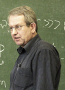

преподаватель физики
редактор журнала "Химия и жизнь"
член Российского физического общества и Российского общества социологов
кандидат физико-математических наук
Образование
1983-1985 Всесоюзный электротехнический институт (ВЭИ), НИИ «Исток» (Фрязино), аспирантура, специальность: вакуумная и плазменная электроника
1966-1971 Московский институт электронного машиностроения (МИЭМ), специальность: электронные приборы
1964-1966 Средняя школа №7 (математическая) г. Москвы
Профессиональная деятельность
2022-н.в. ФМШ FMSH.RU, преподаватель физики
1995-н.в. Журнал "Химия и жизнь", редактор
2015-2018 Журнал "Знание – сила", редактор
2009-2017 Проверяющий ЕГЭ (физика)
1995-2014 МИЭМ, кафедра Материаловедения, кафедра Метрологии, доцент
1971-1995 Всесоюзный электротехнический институт (ВЭИ), отделение электроники
1966-2022 ФМШ МИЭМ, преподаватель физики
Дополнительная информация
Фактический опыт преподавания – со времени обучения в 10-м классе – проведение лабораторных работ у соучеников.
Постоянный автор журналов «Наука и жизнь», «Химия и жизнь», «Квант».
Постоянные области занятий, то есть работы и/или преподавания: физика, инженерия, социология, редактирование.
Временные области занятий: альпинизм, спелеология, некоторые молодежные субкультуры.
Постоянные области интереса: история электронных приборов, современная литература (особенно – фантастика), еврейская культура, демография, психология.
Автор девяти книг, а также статей во всех названных областях, опубликованных в научной, научно-популярной, популярной и бульварной периодике. Тексты публиковались на бумаге и в интернете, на основных мировых языках – английском, болгарском, польском, русском и японском.

научный руководитель проекта ФМШ FMSH.RU, преподаватель математики и информатики
доцент департамента прикладной математики МИЭМ НИУ ВШЭ
член Московского математического общества
кандидат технических наук
Образование
1975-1981 Московский институт электронного машиностроения (МИЭМ), специальность: "Прикладная математика"
1973-1975 ФМШ МВТУ им. Н.Э.Баумана
1965-1975 Средняя школа №558 г. Москвы
Профессиональная деятельность
2022-н.в. ФМШ FMSH.RU, научный руководитель, преподаватель математики и информатики
2012-н.в. МИЭМ НИУ ВШЭ, департамент прикладной математики, доцент
1979-н.в. Репетитор по математике и информатике
2012-2022 ФМШ МИЭМ, научный руководитель
1991-2016 В разные годы: доцент в МГУ (ВМК), РГГУ, МГАПИ, МИРЭА
1991-2005 ВМИЭМ, центр информатики, директор
1990-2007 МИЭМ, приёмная комиссия, член предметной комиссии по математике
1982-2012 ФМШ МИЭМ, директор
1982-2022 ФМШ МИЭМ, преподаватель математики и информатики
1981-2012 МИЭМ, кафедра кибернетики, ст. преподаватель, доцент
1980-1982 ФМШ МИЭМ, преподаватель математики
Дополнительная информация
Соавтор советского учебника "Основы информатики и вычислительной техники" (Просвещение, 1989, 1990), созданного в ФМШ МИЭМ и занявшего 1 место на конкурсе учебников информатики.
Соучредитель и главный редактор международного журнала "Компьютеры в образовании" (1996-1998).
Опыт преподавательской деятельности с IV курса. Среди учеников – призеры Всероссийской олимпиады по математике, призеры и победители олимпиад МГУ, Физтеха, ВШЭ, "Бауманки".
Дополнительная область интересов: спортивный туризм (велотуризм). Мастер спорта, мастер туризма, Заслуженный путешественник России. Президент Русского клуба велопутешествий. Побывал на велосипеде более чем в 60 странах.
Дополнительное образование: нутрициолог (РУДН), тренер по виду спорта (спортивный туризм) (РГУФКСМИТ).

заместитель координатора проекта ФМШ FMSH.RU, преподаватель информатики
доцент СУНЦ-1 МГТУ им. Н.Э.Баумана
приглашённый преподаватель МИЭМ
кандидат технических наук
учитель высшей категории
эксперт ЕГЭ и ГИА по предмету "Информатика и ИКТ"
Образование
2016-2017 Волгоградская Гуманитарная Академия профессиональной подготовки специалистов социальной сферы, квалификация: "Учитель информатики и ИКТ"
2009-2011 Академия повышения квалификации и профессиональной переподготовки работников образования, квалификация: "Менеджер образования"
1997-2001 МИЭМ, аспирантура, специальность: "Математическое и программное обеспечение вычислительных машин, комплексов и компьютерных сетей" (05.13.11)
1991-1997 Московский институт электронного машиностроения/электроники и математики (МИЭМ), специальность: "Прикладная математика"
1981-1991 Средняя школа №15 Балашихинского р-на Московской области
Профессиональная деятельность
2022-н.в. ФМШ FMSH.RU, зам. координатора проекта, преподаватель информатики
2017-н.в. МГТУ им. Н.Э.Баумана, СУНЦ-1, доцент
2002-н.в. МИЭМ, доцент
2014-2017 МГАПИ, Институт комплексной безопасности, доцент
2002-2022 ФМШ МИЭМ, зам. директора
2002 РГГУ, зам. декана по учебной работе факультета информатики
2001-2002 РГГУ, каф. АИТИС, ст. преподаватель
1995-2022 ФМШ МИЭМ, преподаватель информатики

Образование
2019-2021 Московский городской педагогический университет (МГПУ), магистр, направление подготовки: "44.04.02 Психолого-педагогическое образование", профиль образовательной программы: Проектирование и экспертиза развивающего обучения, ВКР: "Альтернативная организация уровней общего образования: потенциал и перспективы изменения"
2005-2010 Московский государственный институт электроники и математики (МИЭМ), специальность: "Прикладная математика"
2001-2005 Физико-математическая школа МИЭМ (ФМШ МИЭМ)
1994-2005 Школа №330 ЦАО г. Москвы
Профессиональная деятельность
2022-н.в. ФМШ FMSH.RU, преподаватель математики
2020-2022 Первый Музыкальный лицей им. А.В.Александрова МГИК, служба организации учебного процесса, техническая служба, учитель математики
2019-2020 Школа №91 г. Москвы, учитель математики
2015-2022 ФМШ МИЭМ, преподаватель математики
2013-2014 Школа №261 г. Москвы, учитель математики
2009-2013 Школа №179 МИОО, учитель математики, лаборант физической лаборатории
2008-2011 ФМШ МИЭМ, преподаватель математики
Образование
2003-2008 МГУ им. М.В.Ломоносова, филологический факультет, специальность: "Русский язык и литература"
2001-2003 Школа №469 г. Москвы
1993-2001 Школа №1256 с углубленным изучением английского языка г. Москвы
Профессиональная деятельность
2022-н.в. ФМШ FMSH.RU, преподаватель русского языка и литературы
2021-н.в. Семейная школа "Зинзивер", учитель русского языка
2008-2015 Школа №179 МИОО, учитель русского языка и литературы
2005-2008 Филологический факультет МГУ, "Школа юного филолога", преподаватель
преподаватель математики
ведущий системный аналитик в АО "Системы управления"
Образование
2014-2016 Национальный исследовательский университет "Высшая школа экономики", магистр, направление: 01.04.04 "Прикладная математика"
2009-2014 Московский институт электроники и математики (МИЭМ), специальность: 230401 "Прикладная математика"
1998-2009 Школа №1412 (с углублённым изучением иностранных языков) г. Москвы
Профессиональная деятельность
2022-н.в. ФМШ FMSH.RU, преподаватель математики
2022-н.в. "Системы управления", ведущий системный аналитик
2010-н.в. Репетитор по математике
2019-2022 "Софт Компани", руководитель команды сопровождения
2019 "RedSys", ведущий аналитик
2016-2019 "AT Consulting", старший консультант
2013 Аналитический центр НИУ ВШЭ, аналитик-стажер
2011-2022 ФМШ МИЭМ, преподаватель математики

Образование
2021 АНО ДПО "ВГАППССС", г. Волгоград, квалификация: "Учитель математики"
2021 АНО ДПО "Институт современного образования", г. Калининград, квалификация: "Менеджер образования"
2019-2021 МИЭМ НИУ ВШЭ, магистр, направление: "Прикладная математика и информатика"
2015-2019 МИЭМ НИУ ВШЭ, бакалавр, направление: "Прикладная математика"
2008-2015 МОУ лицей №3 г. Волгограда
2004-2008 МОУ гимназия №13 г. Волгограда
Профессиональная деятельность
2022-н.в. ФМШ FMSH.RU, преподаватель математики
2021-2022 МАОУ лицей №23, г. Калининград, учитель математики, методист
2016-2020 НИУ ВШЭ, учебный ассистент; приёмная комиссия, консультант
2016-2022 ФМШ МИЭМ, преподаватель математики

преподаватель информатики
ведущий тестировщик в МТС Диджитал, кластер Телеком, Блок информационных технологий
Образование
2009-2014 МИЭМ, факультет прикладной математики, инженер-математик
2005-2008 Школа искусств, г. Юбилейный, класс фортепиано
1999-2005 Хоровая школа "Подлипки" им. Б.А.Толочкова, г. Королёв, класс фортепиано
1999-2009 МБОУ "Лицей №4" г. Юбилейный
Профессиональная деятельность
2022-н.в. ФМШ FMSH.RU, преподаватель информатики
2017-н.в. МТС Диджитал, кластер Телеком, Блок информационных технологий, ведущий тестировщик
2021-2022 ФМШ МИЭМ, преподаватель информатики
2014-2017 Федеральный госслужащий
2012-2017 ФМШ МИЭМ, преподаватель информатики
2009-2014 Репетитор по математике и информатике

координатор проекта ФМШ FMSH.RU, преподаватель математики и информатики
предприниматель, генеральный директор ООО "Е-ПОС"
регистратор международной системы расчётов WebMoney Transfer
Образование
2002-2003 Международный университет (в Москве), Высшая школа журналистики
1997-2001 МГУ им. М.В.Ломоносова, факультет психологии, специализация: "Диагностика и развитие личности. Психологическое консультирование"
1996-1999 МИЭМ, аспирантура, специальность: "Математическое и программное обеспечение вычислительных машин, комплексов и компьютерных сетей" (05.13.11)
1990-1996 Московский институт электронного машиностроения/электроники и математики (МИЭМ), специальность: "Прикладная математика"
1988-1990 Физико-математическая школа МИЭМ (ФМШ МИЭМ)
1980-1990 Средняя школа №341 Ворошиловского р-на г. Москвы
1978-1987 Детская музыкальная школа №42 Ленинградского р-на г. Москвы, специальность: скрипка
Профессиональная деятельность
2022-н.в. ФМШ FMSH.RU, координатор проекта, преподаватель математики и информатики
2007-н.в. ООО "Е-ПОС", генеральный директор
2006-н.в. WebMoney Transfer, регистратор
2013-2016 Гимназия №1583 г. Москвы, учитель математики
2012-2022 ФМШ МИЭМ, директор
2007-2008 Средняя общеобразовательная школа №16 г. Москвы, учитель математики
2003-2004 Московский госудерственный колледж информационных технологий, преподаватель информатики
2001-2002 Экономико-юридический колледж, преподаватель математики
2001-2002 Московский приборостроительный техникум, преподаватель математики
1998-1999 МГАПИ, ст. преподаватель
1997-2012 МИЭМ, ст. преподаватель
1997-2005 МАТИ-РГТУ им. К.Э.Циолковского, ст. преподаватель, доцент
1996-2012 ФМШ МИЭМ, зам. директора
1993-1998 Республиканский исследовательский научно-консультационный центр экспертизы (РИНКЦЭ), программист, м.н.с.
1990-2022 ФМШ МИЭМ, преподаватель математики и информатики